Purpose of this project is to allow creating cheap and easy to deploy Fog Nodes based on Raspberry Pi.
Another key point for this project was to provide simple way for maintaining the infrastracture, this was done by using network booting of Raspberry Pi, with storing images of each system individually
All of features are available through REST API, allowing for easy automatisation. This project was made as part of my master thesis.